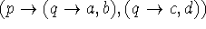
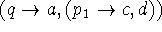
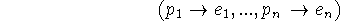
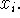
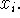
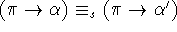

The theory of conditional expressions corresponds to analysis by cases in mathematics and is only a mild generalization of propositional calculus.
We start by considering expressions called generalized Boolean forms (gbf) formed as follows:
1. Variables are divided into propositional variables p, q, r, etc. and general variables x, y, z, etc.
2. We shall write for is called an elementary
conditional form (ecf) of which p, x, and y are called the
premiss, conclusion and the alternative,
respectively.
3. A variable is a gbf, and if it is a propositional variable it is called a propositional form (pf).
4. If  is a pf and and are gbfs, then is a gbf. If, in addition, and are
pfs, so is
is a pf and and are gbfs, then is a gbf. If, in addition, and are
pfs, so is
The value of a gbf for given values (T, F or undefined) of the propositional variables will be T or F in case is a pf or a general variable otherwise. This value is determined for a gbf according to the table
We shall say that two gbfs are strongly equivalent if they have the same value for all values of the propositional variables in them including the case of undefined propositional variables. They are weakly equivalent if they have the same values for all values of the propositional variables when these are restricted to F and T.
The equivalence of gbfs can be tested by a method of truth tables identical to that of propositional calculus. The table for and is given on the foregoing page.
According to the table, and are strongly equivalent.
For weak equivalence the u case can be left out of the table.
Consider the table,
which proves that  and  are weakly equivalent. They are also strongly equivalent. We shall write and
for the relations of strong and weak equivalence.
are weakly equivalent. They are also strongly equivalent. We shall write and
for the relations of strong and weak equivalence.
There are two rules whereby an equivalence can be used to generate other equivalences.
1. If and is the result of
substituting any gbf for any variable in  then This is called the rule of substitution.
then This is called the rule of substitution.
2. If and is subexpression of  and
is the result of replacing an occurrence of in
and
is the result of replacing an occurrence of in  by an occurrence of , then
by an occurrence of , then  This is
called the rule of replacement.
This is
called the rule of replacement.
These rules are applicable to either strong or weak equivalence and in fact to much more general situations.
Weak equivalence corresponds more closely to equivalence of truth functions in propositional calculus than does strong equivalence.
Consider the equations
All are strong equivalence except the first, and all can be proved by truth tables.
These eight equations can be used as axioms to transform any gbf into any weakly equivalent one using substitution and replacement.
In fact, they can be used to transform any gbf into a canonical form. This canonical form is the following. Let be the variables of the gbf a taken in an arbitrary order. Then a can be transformed into the form
where each has the form
and in general for each k = 1,...,n-1
and each is a truth value or a general variable.
For example, the canonical form of
with the variables taken in the order r, q, p is
In this canonical form, the 2 cases of the truth or falsity of are explicitly exhibited.
An expression may be transformed into canonical form as follows:
1) Axiom 7 is used repeatedly until in every subexpression the  in consists of a single propositional
variable.
in consists of a single propositional
variable.
2) The variable is moved to the front by repeated application of axiom 8. There are three cases: to which axiom 8 is directly applicable;  where axiom 8 becomes applicable after axiom 1 is used to make it the case which is handled in a manner similar to that of case 2.
Once the main expression has the form we move any 's which occur in and to the front and eliminate them using axioms 5 and 6. We then bring to the front of and using axiom 1 if necessary to guarantee at least one occurrence of in each of and . The process is continued until the canonical form is achieved.
There is also a canonical form for strong equivalence. Any gbf a is strongly equivalent to one of the form , where and do not contain and are themselves in canonical form. However, the variable may not be chosen arbitrarily but must be an inevitable propositional variable of the original gbf and can be chosen to be any inevitable variable. An inevitable variable of a gbf is defined to be either the first propositional variable or else an inevitable variable of both and . Thus p and q are the inevitable variables of
A gbf a may be put in strong canonical form as follows:
1) Use axiom 7 to get all premisses as propositional variables.
2) Choose any inevitable variable, say and put a in the form by using axiom 8.
3) The next step is to eliminate occurrences of in and
. This can be done by the general rule that in any ecf
occurrences of the premiss in the conclusion can be replaced by T and
occurrences in the alternative by F. However, if we wish to use
substitution and replacement on formulas we need the additional
axioms
(9)
and
(10)
Suppose there is an occurrence of in the conclusion; we want to
replace it by T. To do this, we use axioms 9 and 10 to move in a
until the objectionable occurs as the inner of one of the
forms
or
In either case, the objectionable can be removed by axiom 5 or 6, and the 's that were moved in can be moved out again.
Thus we have with missing from and
4) Inevitable variables are then brought to the front of and and so forth.
Two gbfs are equivalent (weakly or strongly) if and only if they have the same (weak or strong) canonical form. One way this is easy to prove; if two gbfs have the same canonical form they can be transformed into each other via the canonical form. Suppose two gbfs have different weak canonical forms when the variables are taken in the same order. Then values can be chosen for the p's giving different values for the form proving non-equivalence. In the strong case, suppose that two gbfs do not have the same inevitable propositional variables. Let p be inevitable in a but not in b. Then if the other variables are assigned suitable values b will be defined with p undefined. However, a will be undefined since p is inevitable in a which proves non-equivalence. Therefore, strongly equivalent gbfs have the same inevitable variables, so let one of them be put in front of both gbfs. The process is then repeated in the conclusion and alternative etc.
The general conditional form

can be regarded as having the form
where u is a special undefined variable and their properties can be derived from those of gbf's.
The relation of functions to conditional forms is given by the distributive law
The rule of replacement can be extended in the case of conditional
expressions. Suppose is an occurrence of a subexpression of an
expression . We define a certain propositional expression  called the premiss of in as follows:
called the premiss of in as follows:
1) The premiss of in is T
2) The premiss of in where is part of  is the premiss of in 
is the premiss of in 
3) If occurs in  and the premiss of in
and the premiss of in  is
is  , then the premiss of in is
, then the premiss of in is
4) If occurs in and the premiss of in is  , then the premiss of in is
, then the premiss of in is
The extension of the rule of replacement is that an occurrence
of in may be replaced by if  where  is the premiss of in
. Thus in a subcase one needs only prove equivalence under the
premiss of the subcase.
is the premiss of in
. Thus in a subcase one needs only prove equivalence under the
premiss of the subcase.